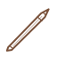
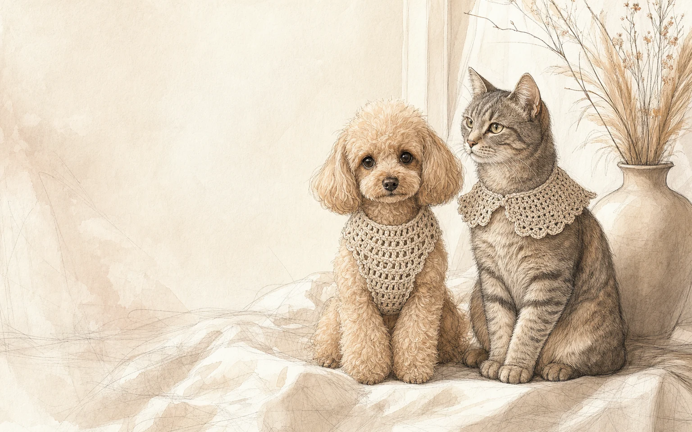

Made to Measure
Perfect fit for
your pet
Every piece is custom made with love,
care and attention to detail.
Perfect fit for
your pet
Crafted with love
in every stitch

For everyday wear

A selection of past orders, each handmade to suit their unique personality.